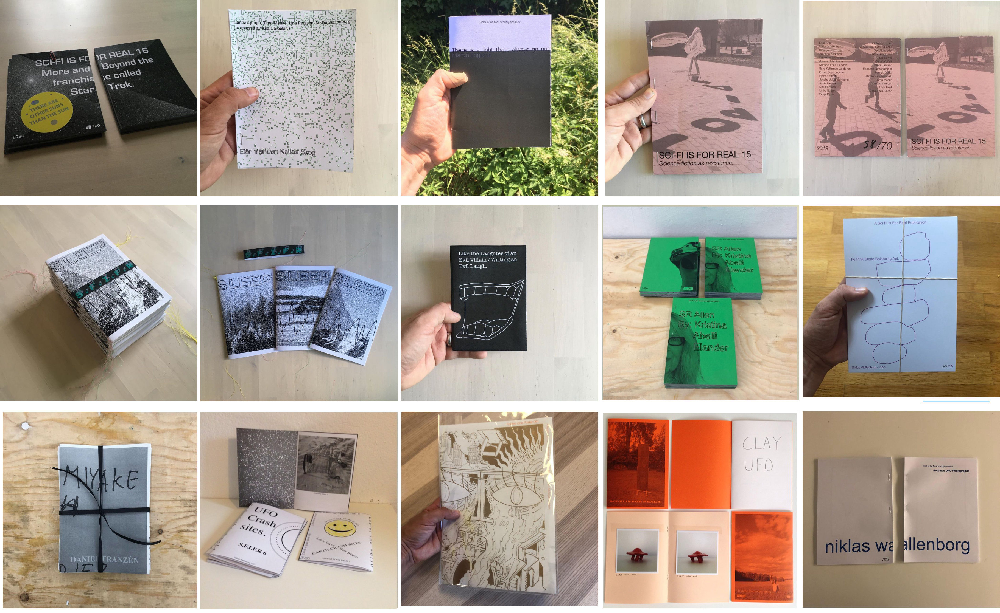

( Interdisciplinary artist, with an interest in socialism, sci-fi, digital culture, space and the apocalypse )
Works / Projects
Sci-fi is for Real was a non-profit independent zine publisher.Based in Stockholm, Sweden and run by the artist Niklas Wallenborg between 2013-2021
Folded Zine Poster 001 - Edition of 30 copies
Featuring artists:
Kristina Abelli Elander, Robin Montelius and Amanda Karlsson
Folded Zine Poster 001 is initiated and designed by Niklas Wallenborg / Sci-Fi is for Real and Jonas Esteban Isfält / Fuzzy Logic Press and printed on Risograf by Fuzzy Logic Press.Folded Zine Poster is a multi-color Riso print
ISSEY MIYAKE OCH ANDRA HISTORIER - Edition of 50 copies
Daniel Franzen
Redrawn UFO Photos - Edition of 20 copies
Niklas Wallenborg
Pink Stone Balancing Act - Edition of 15 copies
Niklas Wallenborg
SR Alien - Edition of 100 copies
Kristina Abelli Elander
Sci-fi is for real 16 - Edition of 70 copies
More and Beyond the franchise called Star Trek
Featuring artists:
John Salquist - Casey Jones - Linda Bergman - James Hutchinson - Jen O´Farrell - Daniel Franzen - Martin Englund - Richard Krantz - Klas Eriksson - Kristina Abelli Elander- Dorniel Marc - Maria-Corina Wahlin - David Åberg - Makode Linde - Kristoffer Ekman - Paul Steen - Kristoffer Svenberg - Karl Nord - Hanna Wildow - Maria Andersson - Niklas Wallenborg - Ashik Zaman
Sci-Fi is for Real (Digital Issue)
Pandemic.
Featuring artists:
Martin Englund - Melanie Wiksell _ Timo Menke - Richard Krantz - Sara Elgren - Sinasi Gunes - James Hutchinson - Niklas Wallenborg - Kristoffer Ekman - Igor Holtermann - Gunga Guerra - Patrik Qvist _ Martina Lundkvist _ Brady Izquierdo Rodrguez -Kristina Abelli Elander - C-Print Journal - J Phizmor - Dorinel Marc - Johan Unga - William C. Woxlin Thomas Watkiss - Daniel Franzen - Daniel Svahn - Aski Dahl - Eelkje Rijkers
Like the Laughter of an Evil Villain / Writing an Evil Laugh - Edition of 10 copies
Niklas Walleborg
'There is a light thats always go out' - Edition of 25 copies
Martin Englund
Sci-fi is for real 15 - Edition of 70 copies
UTOPIA
Featuring artists:
Elliot Avis - Niklas Wallenborg - Steingrimur Eyfjord - Amanda Karlsson - Kristoffer Svenberg - James Hutchinson - Kristina Abelli Elander - Sara Kallioinen Lundgren - Oscar Guermouche - Björn Kjelltoft - Jascha Jakob Schieche - Ashik Zaman - Lina Persson - Ulrika Sparre - Peter Banö - Kristoffer Ekman - Julie Shipp/Sara Falkstad - David Lindqvist - Patrik Bengtsson - Lin de Mol - Sara Wolfert - Svante Larsson - Rebecca Farrensteiner - Patrick Durka - Alexandra Karpilovski - Timo Menke - Erick Kvist - Geraldine Hudson.
Sci-fi is for real 14 - Edition of 15 copies
Niklas Wallenborg
Sci-fi is for real 13 - Edition of 100 copies
HYPERSLEEP
Featuring artists:
Lina Persson - Robert Stasinski -Timo Menke - Kira Carpelan - Debora Elgeholm - Daniel Svahn - Svante Larsson - Andreas Mangione - Marcus Ivarsson - Thomas Watkiss - Ragnar Persson - Helene Karlsson - Sara Falkstad - Björn Kjelltoft - Åsa Johansson - Vilda Kvist - Jakob Ojanen - Richard Krantz - Kristina Abelli Elander -Johanna Dahlberg - Patrick Kretschek - Anna Ridderstad - Jacquelyn Davis - Roger von Reybekiel - Åsa Elieson - Anna Lidberg- Erica Jacobson - Cecilia Germain - Niklas Wallenborg.
Sound Wave (mono) Alien 117min 1979 - Edition of 10 copies
Niklas Wallenborg
more to come
Sci-fi is for real 12 - Edition of ? copies
Niklas Wallenborg
Sci-fi is for real 11 - Edition of ? copies
Niklas Wallenborg
Sci-fi is for real 10 - Edition of ? copies
Niklas Wallenborg
Sci-fi is for real 09 - Edition of ? copies
Niklas Wallenborg
Sci-fi is for real 08 - Edition of ? copies
Niklas Wallenborg
Sci-fi is for real 07 - Edition of ? copies
Niklas Wallenborg
Sci-fi is for real 06 - Edition of ? copies
Niklas Wallenborg
Sci-fi is for real 05 - Edition of ? copies
Niklas Wallenborg
Sci-fi is for real 04 - Edition of ? copies
Niklas Wallenborg
Sci-fi is for real 03 - Edition of ? copies
Niklas Wallenborg
Sci-fi is for real 02 - Edition of ? copies
Niklas Wallenborg
Sci-fi is for real 01 - Edition of ? copies
Niklas Wallenborg
Virtual Total Eclipse(of the heart)
Recreate the first Meal Eaten in Space
How to Explain Internet and the Age of Surveillance Capitalism to a Karl Marx bust.
Everlasting (neverending) Sunrise/Sunset
Time will tear us apart and draw us together
Utopia - Our own fantasy will be the Revolution.